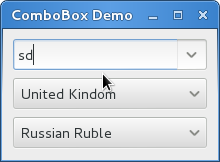

组合框（ComboBox）¶
Gtk.ComboBox 允许你从一个下拉列表中选择项目。
由于其占用更少的空间，应该是在屏幕上显示很多radio按钮的优选方案。如果恰当，他可以
显示很多条目额外的信息，如文本，图片，checkbox或者一个进度条。
Gtk.ComboBox 与 Gtk.TreeView 非常类似，他们都使用模型-视图模式；
有效选项的列表在tree model中指定，而选项的显示可以通过
cell renderers 适配到模型中。如果组合框包含很多的项目，
那么将他们显示在网格中比显示在列表中更好，调用
Gtk.ComboBox.set_wrap_width() 可以实现。
Gtk.ComboBox 控件通常会限制用户可能的选择，但是你可以设置一个
Gtk.Entry ，允许用户输入任意的文本如果列表中的项目均不合适。
要设置 Gtk.Entry ，使用静态方法
Gtk.ComboBox.new_with_entry() 或者 Gtk.ComboBox.new_with_model_and_entry()
来创建 Gtk.ComboBox 的实例。
对于简单的文本选择下拉列表， Gtk.ComboBox 的
模型-视图API可能有点大材小用（太复杂），因此
Gtk.ComboBoxText 提供了一种更简单的选择。
Gtk.ComboBox 和 Gtk.ComboBoxText 均可以包含一个输入框。
ComboBox objects¶
-
class
Gtk.ComboBox¶ -
static
new_with_entry()¶ 创建一个带有输入框的空的
Gtk.ComboBox。
-
static
new_with_model(model)¶ 创建一个新的
Gtk.ComboBox,模型被初始化为 model 。
-
static
new_with_model_and_entry(model)¶ 创建一个新的带有输入框的
Gtk.ComboBox，并且模型被初始化为 model 。
-
get_active_iter()¶ 返回一个
Gtk.TreeIter的实例，并且指向当前激活的项目。 如果没有激活的项目，则返回None。
-
set_model(model)¶ 设置组合框使用的 model 。这会替换之前设置过的 model（如果有）。 如果model为
None，则会取消之前的设置。注意此方法不会清除单元格渲染器的内容。
-
get_model()¶ 返回作为组合框数据源的
Gtk.TreeModel。
-
set_entry_text_column(text_column)¶ 设置组合框要从模型的哪一列 text_column 来获取文笔内容，模型中的 text_column 必须为
str类型。只用组合框的 “has-entry” 属性为
True时才可以用。
-
set_wrap_width(width)¶ 设置组合框的wrap width为 width 。wrap width指当你想弹出一个网格显示的 列表时的首选列数。
-
static
ComboBoxText objects¶
-
class
Gtk.ComboBoxText¶ -
static
new_with_entry()¶ 创建一个空的带有输入框的
Gtk.ComboBoxText。
-
append_text(text)¶ 添加 text 到组合框的字符串列表中。
-
get_active_text()¶ 返回组合框当前激活的文本字符串，如果没有被选中的，则返回
None。 本函数会返回字符串的内容（不一定是列表中的项目）。
-
static
Example¶
1 2 3 4 5 6 7 8 9 10 11 12 13 14 15 16 17 18 19 20 21 22 23 24 25 26 27 28 29 30 31 32 33 34 35 36 37 38 39 40 41 42 43 44 45 46 47 48 49 50 51 52 53 54 55 56 57 58 59 60 61 62 63 64 65 66 67 68 69 70 71 72 73 74 75 | from gi.repository import Gtk
class ComboBoxWindow(Gtk.Window):
def __init__(self):
Gtk.Window.__init__(self, title='ComboBox Demo')
self.set_border_width(10)
name_store = Gtk.ListStore(int, str)
name_store.append([1, 'Billy Bob'])
name_store.append([11, 'Billy Bob Junior'])
name_store.append([12, 'Sue Bob'])
name_store.append([2, 'Joey Jijo'])
name_store.append([3, 'Rob McRoberts'])
name_store.append([31, 'Xavier McRoberts'])
vbox = Gtk.Box(orientation=Gtk.Orientation.VERTICAL, spacing=6)
name_combo = Gtk.ComboBox.new_with_model_and_entry(name_store)
name_combo.connect('changed', self.on_name_combo_changed)
name_combo.set_entry_text_column(1)
vbox.pack_start(name_combo, False, False, 0)
country_store = Gtk.ListStore(str)
countries = ['Austria', 'Brazil', 'Belgium', 'France', 'Germany',
'Switzerland', 'United Kindom', 'United States of America', 'Uruguay']
for country in countries:
country_store.append([country])
country_combo = Gtk.ComboBox.new_with_model(country_store)
country_combo.connect('changed', self.on_country_combo_changed)
renderer_text = Gtk.CellRendererText()
country_combo.pack_start(renderer_text, True)
country_combo.add_attribute(renderer_text, 'text', 0)
vbox.pack_start(country_combo, False, False, True)
currencies = ['Euro', 'US Dollars', 'British Pound', 'Japanese Yen',
'Russian Ruble', 'Mexican peso', 'Swiss franc']
currency_combo = Gtk.ComboBoxText()
currency_combo.set_entry_text_column(0)
currency_combo.connect('changed', self.on_currency_combo_changed)
for currency in currencies:
currency_combo.append_text(currency)
vbox.pack_start(currency_combo, False, False, 0)
self.add(vbox)
def on_name_combo_changed(self, combo):
tree_iter = combo.get_active_iter()
if tree_iter != None:
model = combo.get_model()
row_id, name = model[tree_iter][:2]
print 'Selected: ID=%d, name=%s' %(row_id, name)
else:
entry = combo.get_child()
print 'Entered: %s' %entry.get_text()
def on_country_combo_changed(self, combo):
tree_iter = combo.get_active_iter()
if tree_iter != None:
model = combo.get_model()
country = model[tree_iter][0]
print 'Select: country=%s' %country
def on_currency_combo_changed(self, combo):
text = combo.get_active_text()
if text != None:
print 'Selected: currency:%s' %text
win = ComboBoxWindow()
win.connect('delete-event', Gtk.main_quit)
win.show_all()
Gtk.main()
|